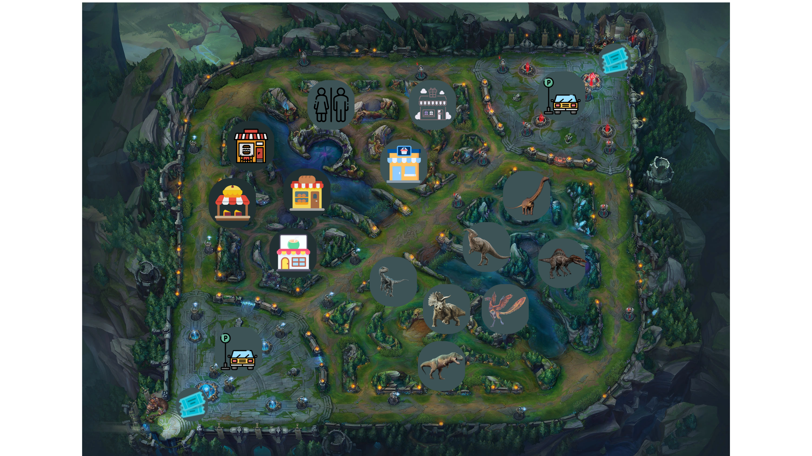
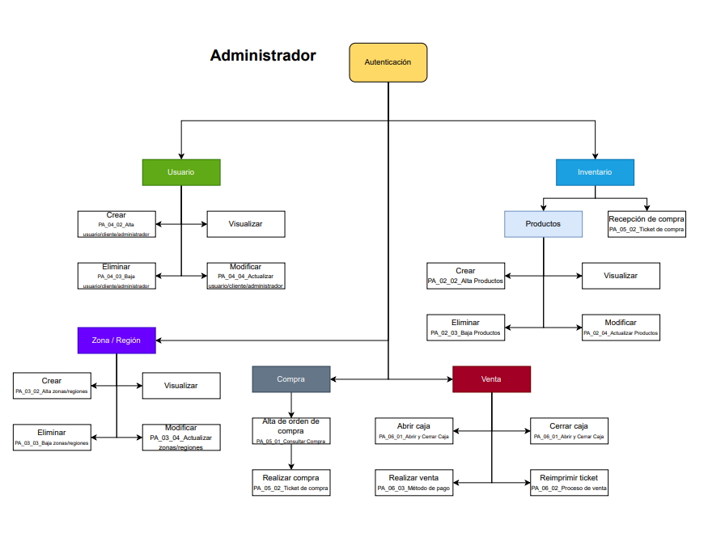

Durante la creación del proyecto utilizamos la metodologia UML o como sus siglas en ingles indican Unified Modeling Language. El parque está diseñado para la preservación de distintas especies y el entretenimiento para recaudar fondos con el mismo proposito principal.
Mision: La mision de la empresa consiste en elevar los niveles de experiencia y entretenimiento del cliente todo con el fin de mejorar los niveles de dopamina de la sociedad actual de un modo mas natural, dando momentos de felicidad junto con la familia o amigos
Vision: La mision de la empresa no es mas que ambicion, desde luego el mayor objetivo es y será ser los mejores.
Lo principal del parque desde luego son los dinosaurios y el entretenimiento alrededor de ellos, el parque cuenta con una capacidad máxima de 3000 personas, aproximadamente 100 dinosaurios de todo tipo y alrededor de 20 tiendas.
